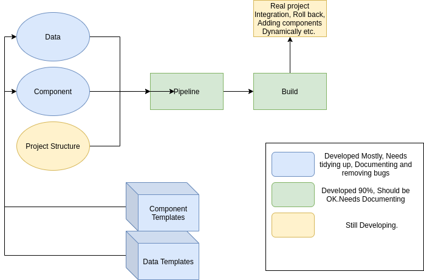

Shalom Templates
Template generation for Web development projects.

Installation
git clone "https://github.com/IpsumDominum/ShalomTemplates.git"
install dependencies
cd ShalomTemplates
pip install jinja2 # Jinja2 is pretty much the only dependency
st --version # check if it is properly installed
Add to System Path and give permission to run
Linux (Ubuntu 18.04 tested)
$export PATH=/replace/this/with/path/to/ShalomTemplates:$PATH
$chmod 755 st # Gives st executable permission
Windows
Open system variables and append to the PATH variable, the path to ShalomTemplates. Guide to how to add to system variable on windows
Get Started
See Quick Start
Commands
st new [project-name]- Create a new project.(TODO)st build- Build the project.st add model|service- Adds a component to the project.(TODO)st -h- Print help message and exit.
Project layout
project.shalom # The configuration file.
models/
exampleModel.auleModel # Some model
... # Some more Models...
build/